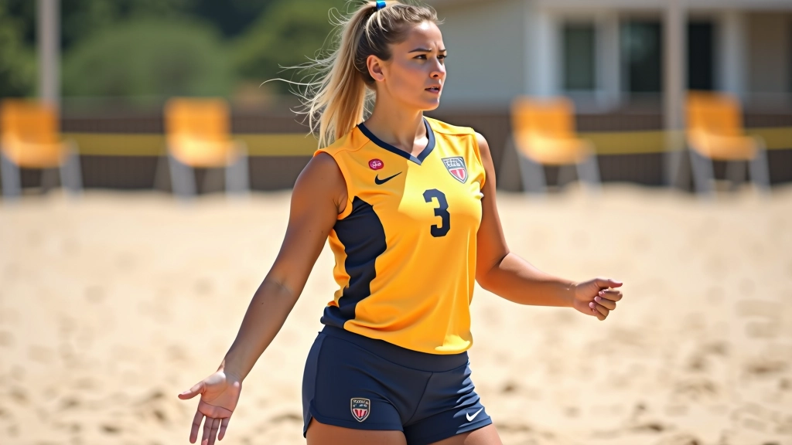
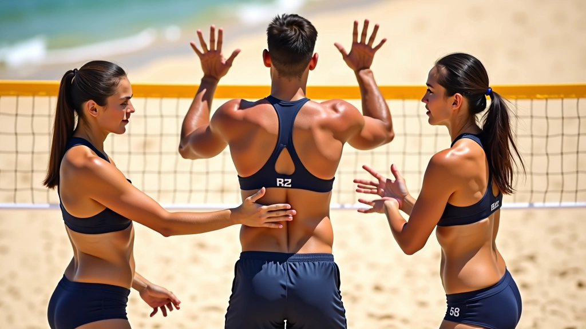

الإشارات الأساسية للمبتدئين
الإشارات الخمس الأساسية التي يحتاج كل لاعب جديد إلى تعلمها قبل الدخول إلى الملعب...
إشارات معقدة تستخدمها الفرق المتقدمة للتنسيق بين الهجوم والدفاع. تتضمن تغييرات تكتيكية سريعة وردود أفعال متقدمة تعتمد على قراءة اللعبة والتنبؤ بحركات الخصم.

عندما تصل إلى المستوى المتقدم، الإشارات لا تقتصر على تمرير الكرة فقط. أنت الآن تنسق استراتيجيات معقدة. تغيّر التشكيلات في الثانية الواحدة. تقرأ نوايا الفريق الخصم وتستجيب بسرعة.
الفرق التي تلعب بهذا المستوى تعتمد على إشارات دقيقة جداً. حركة يد بسيطة قد تعني تغيير كامل في خطة اللعب. الشريك يجب أن يفهم النية من رؤية الإشارة الواحدة فقط — لا وقت لنقاش إضافي.
المحتوى في هذا الدليل مخصص للأغراض التعليمية والمعلوماتية فقط. الإشارات والتقنيات المذكورة تعتمد على خبرة عملية في اللعب. ننصح بممارسة هذه الإشارات تحت إشراف مدرب مختص يستطيع تقييم أدائك وتصحيح أي أخطاء قد تحدث. كل لاعب يختلف عن الآخر، والتعديلات على الإشارات قد تكون ضرورية حسب احتياجات فريقك.
الهجمات المركبة تتطلب تنسيقاً دقيقاً بين الضاربة والمعدة. الإشارة الأساسية هنا تحدد نوع الهجمة وارتفاع الكرة والاتجاه المتوقع.
الوقت حرج جداً. المعدة يجب أن ترسل الكرة بارتفاع محدد جداً — عادة بين 1.5 إلى 2 متر فوق الأرض. الضاربة تقرأ الإشارة وتضبط زاوية الذراع والقوة بناءً على ما رأته. لا يوجد مجال للخطأ — فريق الدفاع سيتوقع الحركة القياسية، فإذا حدث تأخر صغير في الإشارة، قد يكون الفارق بين نقطة وفقدان الكرة.


الدفاع المتقدم ليس مجرد الوقوف والاستعداد. إنه عملية ديناميكية تتغير كل ثانية بناءً على موقع الكرة وقوة الخصم. الإشارات الدفاعية تخبر شريكك بأين ستذهب الكرة قبل أن تصل إليها.
هذا يحتاج تدريباً كثيفاً. نحن نتحدث عن مئات المرات حتى تصبح العملية طبيعية وسريعة. الفرق الجيدة تدرب هذا كل يوم — حتى لا تفكر فيه، فقط تفعله.
في المستوى المتقدم، الإشارات تصبح أداة نفسية أيضاً. تستخدم الفرق الذكية الإشارات الوهمية لخداع الخصم. قد تعطي إشارة تبدو أنك ستضرب بطريقة معينة، لكنك تضرب بطريقة مختلفة تماماً.
هذا يتطلب ثقة عالية جداً بين الشريكين. إذا أخطأت في قراءة الإشارة الوهمية، ستكون النتيجة كارثية. لكن إذا نجحت، فريق الدفاع سيكون في موضع خاطئ تماماً وستحصل على نقطة سهلة.
الإشارة المعكوسة: تعطي إشارة ضربة يسار لكنك تضرب يمين. الخصم يتحرك لليسار، الكرة تمر من اليمين.
التأخير الزمني: تعطي الإشارة لكن تؤخر الهجمة بـ 2-3 ثوان. فريق الدفاع يفقد التركيز ثم تضرب فجأة.
الإشارة المزدوجة: إشارة واحدة للخصم (لخداعهم)، وإشارة مختلفة خفيفة لشريكك (الحقيقية).
تطوير هذه المهارات يستغرق وقتاً طويلاً. لا يمكنك قراءة المقالات والقول "حسناً، أنا مستعد الآن". لا. تحتاج إلى تكرار آلاف المرات حتى تصبح الإشارات والردود الأفعال طبيعية تماماً.
ابدأ بإشارة واحدة فقط. تدرب عليها 50 مرة في الجلسة الواحدة. ثم أضف إشارة ثانية. كل إشارة تحتاج ثلاثة أيام على الأقل من التدريب المكثف.
مارس الإشارات تحت ضغط — أثناء الجري أو بعد تمرينات تعب. العضلات المتعبة تحتاج إشارات أوضح وأسرع. هذا يحاكي الضغط الحقيقي في المباراة.
لعب مباريات تدريبية بدون توقف. جرب الإشارات الجديدة ضد دفاع حقيقي. سترى بسرعة ما يعمل وما لا يعمل.
معظم الفرق المتقدمة تقضي 30-40% من وقت التدريب على الإشارات والتواصل. ليس على الضربة أو القوة الجسدية، بل على فهم بعضهم البعض. هذا هو الفارق بين فريق عادي وفريق احترافي.
الإشارات المتقدمة ليست مجرد حركات يد عشوائية. إنها نظام تواصل معقد يتطلب ممارسة مكثفة وفهماً عميقاً. كل إشارة لها معنى دقيق، وكل رد فعل يجب أن يكون فوري.
إذا أردت أن تصل إلى المستوى المتقدم حقاً، ركز على الإشارات. تدرب عليها يومياً. اختبرها في مباريات حقيقية. اطلب تغذية راجعة من مدربك وشريكك. كل مباراة ستعلمك شيء جديد.
هل تريد تحسين مستواك أكثر؟ اطلع على الدليل الكامل للممارسة العملية وتمارين متقدمة.
اقرأ دليل الممارسة والتطبيق العملي
فريق تحريري
كتبه فريق إشارات الشاطئ التحريري، متخصص في تقديم إرشادات عملية وسهلة المتابعة. نركز على شرح التقنيات بطريقة مفهومة للاعبين من جميع المستويات.
الإشارات الخمس الأساسية التي يحتاج كل لاعب جديد إلى تعلمها قبل الدخول إلى الملعب...

كيفية استخدام الإشارات للتنسيق بين الدفاعين. تعلم كيف تغطي مناطقك وتحمي شريكك من...

تمارين عملية لتطوير سرعة استجابتك للإشارات. تدريبات فريقية تساعدك على التعود على...